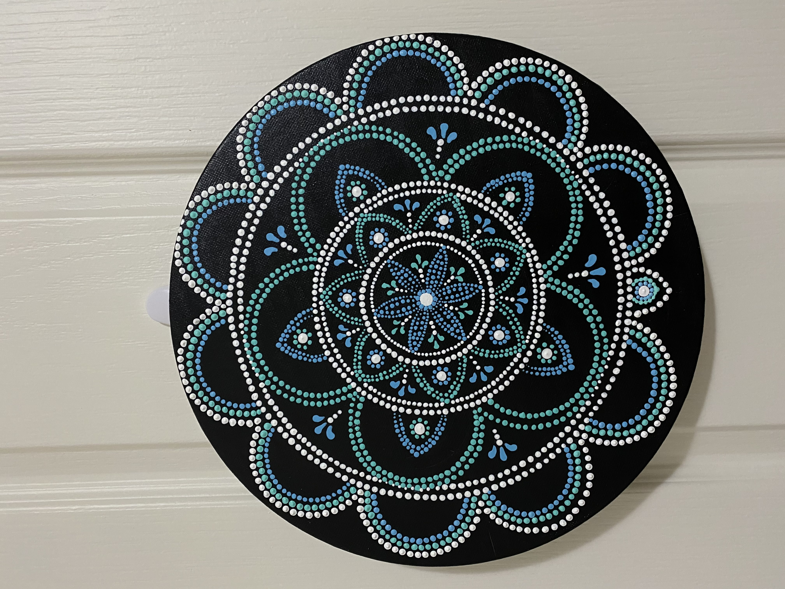
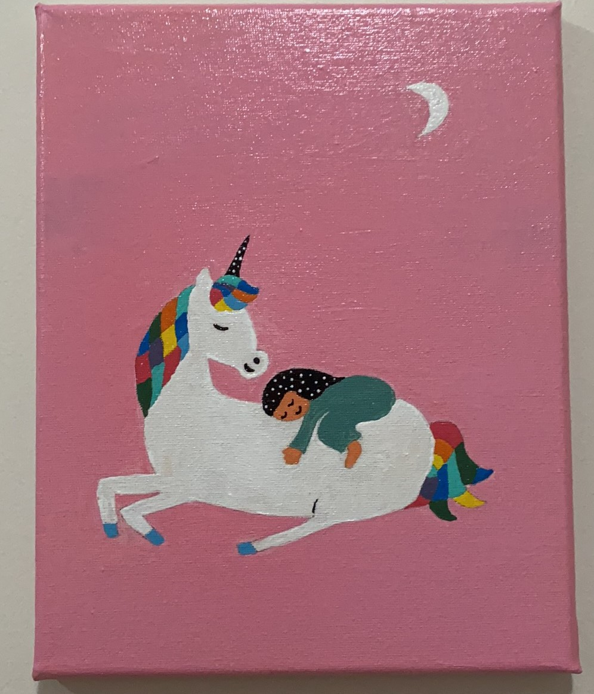
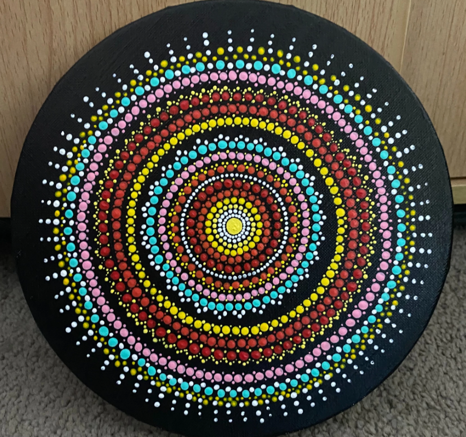

Freestyle

This beautiful painting is called Mandala. Mandala means “Circle” in the ancient Sanskrit language. Traditionally, a mandala painting used to represent the cosmos or deities. Mandala is a geometric design or a pattern which symbolizes the peace in the symmetry of design and the heavenly bodies. There are varieties of Mandala design available. Talking about this beautiful painting I was really motivated by my friends drawing. The way she used the color combination was best. And the design was quite unique and beautiful. She is one of my schoolmates who always gives her best. I really wanted to give a try. Firstly, I asked her if I could copy that painting or not. She gave a green signal, then I bought the canvas. I did a black background and let it dry for I day. And the hardest part was giving those polka dots of similar size. Circles were at its best because of Compass. It took me more than four hours to complete the entire design. When I was done with the drawing my fingertips were already numb as I was continuously drawing the painting.

I still remember watching unicorn’s ads, stickers and short movies. Childhood was fun watching Cartoons and Stories. Unicorn character was always my favourite. Those beautiful eyes and horn use to attract me a lot. Still I am in love with this creature. One day I am just scrolling down Pinterest and I got a glance of this beautiful painting where a little girl was sleeping on Unicorn’s back on night. This painting gave a Flashback to me where I used to imagine riding this beautiful creature. Though I was not familiar with the canvas drawing I thought of giving a try. I bought the required materials and started painting. To be honest it took two days for me to figure out from where to start the drawing. Finally, I started painting. I completed the background as it was quite easy. Then I started drawing the main picture. The more I drew the more I was into my beautiful past. I felt that I was actually turning my dreams in to reality. I tried my best to give the painting its beautiful look as far as possible. I completed that painting in four days. Though it was my first try the result was worth of my time and work.

It is a lovely blessing to be able to use colours. Colour is more of a necessity. It gives life. I am not just talking about the paintings on the wall but everything we see in our day-to-day life. The food that we eat, the clothes that we wear, the scenic view that we observe is completely dull without colours. I feel that the world would be little less exciting and incomplete. This painting is just a portrait of how I was feeling on the inside while painting it. I was free of choices with the colours and was happy most of all.